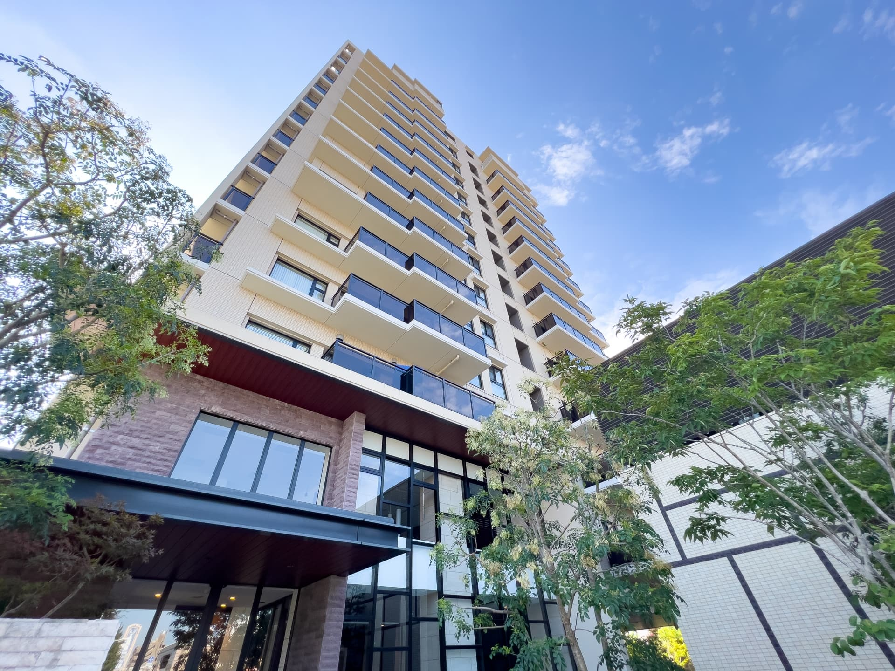
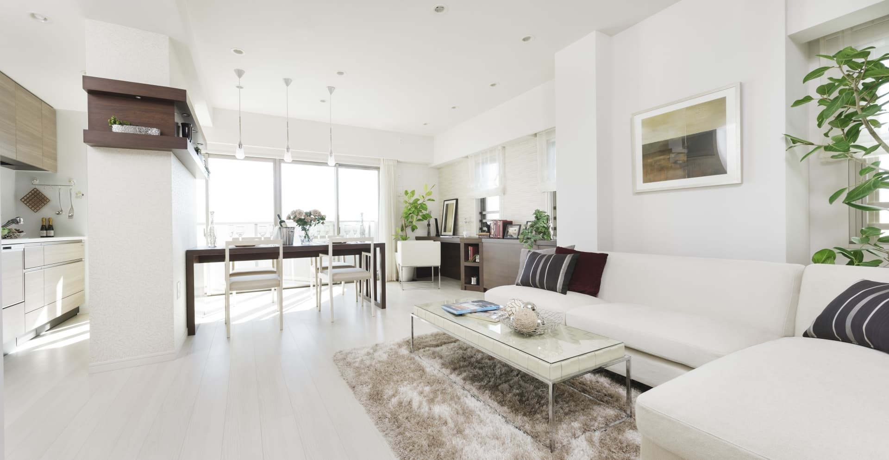
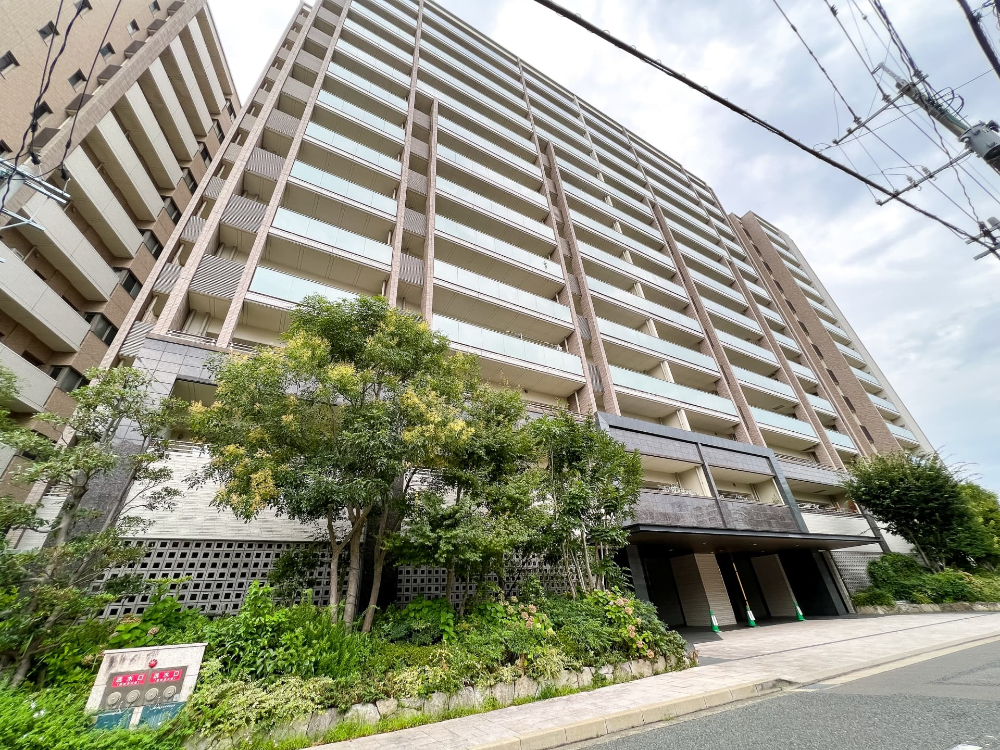
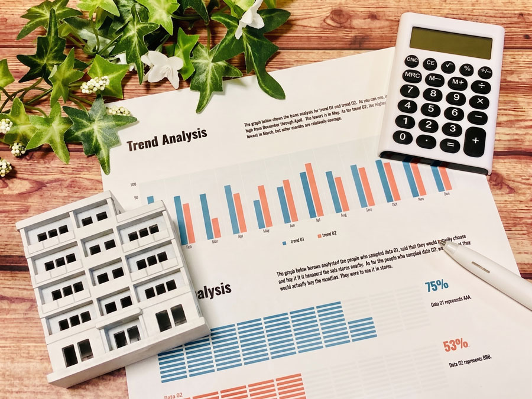
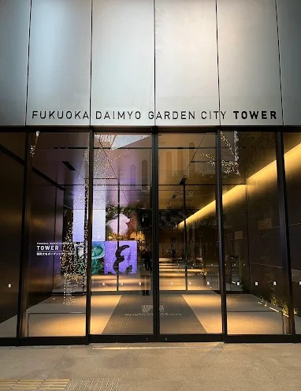
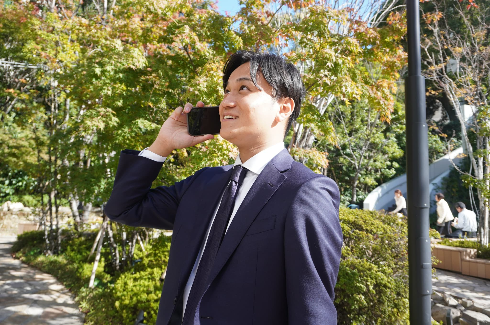

Asset Value
購入も売却も、住み替えも。
福岡市・築10年以内の
マンション売買ならMoveへ。
そのお悩み、
築浅中古マンション売買の専門家
「株式会社Move」に
お任せください。

株式会社Moveは、福岡市を中心に、築10年以内の中古マンションの購入・売却をサポートする不動産会社です。
住まいは「一度買って終わり」ではなく、ライフスタイルや家族構成、将来設計に合わせて変化していくもの。だからこそ当社では、今の暮らしや条件だけでなく、将来的な住み替えや資産価値まで見据えたご提案を大切にしています。
福岡大名ガーデンシティの事務所でのご相談や、テスラ車での送迎案内にも対応。落ち着いた空間で、購入・売却・住み替えに関するご相談を丁寧にお伺いします。
福岡市で築浅中古マンションの購入・売却をお考えの方は、ぜひ株式会社Moveへご相談ください。
福岡市内の築浅中古マンションを中心に、お客様のライフスタイルや将来設計に合わせた物件をご提案します。価格や立地だけでなく、住み替えのしやすさ、流動性、資産価値の維持しやすさまで考慮し、長期的な視点で住まい選びをサポートします。
「高く売りたい」「早く売りたい」「住み替えに合わせて売却したい」など、売却目的に合わせた戦略をご提案します。過去の成約事例だけでなく、現在の在庫状況や近隣の新築分譲マンション価格、今後の供給予定もふまえ、物件の立ち位置を見極めながら査定を行います。

購入と売却を同時に進める住み替えは、タイミングや資金計画が重要です。当社では、売却価格・購入候補・引き渡し時期などを整理し、できるだけスムーズに住み替えが進むようサポートします。
まずは電話なしで、机上での売却査定にも対応しています。「今すぐ売るかは決めていない」「まずは相場を知りたい」という方も、お気軽にご相談ください。お手元の情報をもとに、現在の市場における物件の価値を確認いたします。

当社は、福岡市の築浅中古マンション売買に注力しています。新築に近い住み心地や設備の魅力に加え、将来的な住み替えや売却のしやすさまで見据えたご提案を行います。

売却査定では、過去の成約事例だけに頼るのではなく、現在の在庫状況や競合物件の立ち位置、近隣の新築分譲マンション価格などを考慮します。市場の動きをふまえた査定で、より納得感のある売却戦略をご提案します。
購入時には、価格の安さだけでなく、将来的に住み替えしやすいか、価値が下がりにくいかという視点も大切です。当社では、立地・築年数・管理状況・周辺相場などをふまえ、長く価値を感じられる物件選びをサポートします。
新築分譲マンションの現場を経験してきた営業担当が、購入・売却の両面からご相談を承ります。不動産の表面的な条件だけでなく、物件の見極め方や将来の売りやすさまで、分かりやすくご案内します。

地下鉄空港線「天神駅」「赤坂駅」徒歩圏、福岡大名ガーデンシティの事務所でご相談いただけます。落ち着いた空間で、購入・売却・住み替えについてじっくりご相談いただけます。
不動産売買では、良い物件や売却のタイミングを逃さないことが重要です。当社では定休日を設けず、購入・売却の機会損失を防げるよう、スピード感を持った対応を心がけています。
初めてのマンション売却でしたが株式会社Moveの担当して頂いた永仮さんのおかげで安心して終えることが出来ました。
たくさんの不動産のなかから選んだ理由は、とっても親切で人柄が本当に素晴らしいです。右も左もわからず最初は不安しかありませんでしたが永仮さんが最初から最後まで親身になって相談に乗って下さり丁寧な対応と進歩状況を常に把握できたため、終始安心してお任せすることが出来ました。
最後は希望通りの形で売却を終えることが出来ました。本当に感謝しています。
また機会がありましたらよろしくお願いいたします。ありがとうございました！
最初は年収の面で不安があり、一軒家なんて夢のまた夢だと思っていました。「どうせ夢なら」と、住みたい場所やわがままを言いまくって、ダメなら諦めようという気持ちで相談しました。
MOVEさんはマンションが専門だと聞いていたので、戸建ては見てくれないかなと思いましたが、初めての内見でめちゃくちゃ綺麗な物件を見せてくれました。最初は「希望の場所ではないけれど、ここで納得するしかないかな」とも思いましたが、その後、本当に希望していた場所に建つ、最高の家を紹介してくださいました。内見した瞬間に一目惚れでした。
銀行からお金を借りる仕組みも、自分がいくら借りられるかも全く分からない状態でしたが、営業担当の永仮（ながかり）さんが本当に親身になって、手取り足取り教えてくださいました。全ての手続きがスムーズで分かりやすく、私のような臆病で引っ込み思案な性格でも、おかげさまで理想のマイホームを手に入れることができました。
実は、この希望していた地域は、私がかつて住んでいた場所でした。当時は父の自己破産により、家を手放してこの土地を離れることになってしまったという悔しい過去があります。全く同じ家ではないにしても、「いつか絶対にこの場所へ戻ってやる」と、20年前に心に強く誓った、私にとって特別な場所でした。
20年前のあの頃、ただの若造で、何者でもなかった自分の、一番叶えたかった願いを永仮さんが叶えてくれたのです。本当に感謝しかありません。
大手の不動産屋に頼んで疑心暗鬼になりながら話を進めるよりも、アットホームで、まるで本当の身内のことかのように一生懸命お世話をしてくれるMOVEさんは本当に最高です。
普段は口コミなんて絶対に書かないのですが、これくらいしか恩返しができないと思い投稿しました。家探しで悩んでいる全ての人に、心の底からおすすめしたい最高の会社です。永仮さん、20年越しの夢を叶えてくれて、本当に本当にありがとうございました！
初めてのマンション売却で複数社に一括査定を依頼した所、一番にメールで査定価格を提案してくれて、次の日には訪問して頂きとても仕事が早い印象を受けました。
訪問してくれたのは株式会社Moveの永仮さんで仕事が早く人柄が良さそうだったので、永仮さんにお願いする事に決めました。
初めてのマンション売却で不安しかなかったのですが、細かい部分まで親身になって相談に乗って解決してくれて第一印象通りとても人柄が良く信頼できる方です。
決済と引渡しも終わり、担当者が永仮さんで本当に良かったと思います。
次回のマンション購入も担当して頂く予定です。
知り合いにも勧めたい担当者です。
中古マンションの購入、売却、住み替え、机上査定のご相談まで幅広く対応しています。
「今のマンションがいくらで売れるか知りたい」
「築浅で資産価値の高い物件を探したい」
「売却と購入を同時に進めたい」
そんな方は、まずはお気軽にお問い合わせください。
福岡市の築浅中古マンション売買に精通した担当者が、丁寧にご案内いたします。
多くの不動産会社がある中で、他の会社と違う価値提供ができればと常に考えてます。
今後とも精進しますので、宜しくお願い致します。

SALESお客様のために、売却・購入のどちらも迅速かつ誠実に対応します。